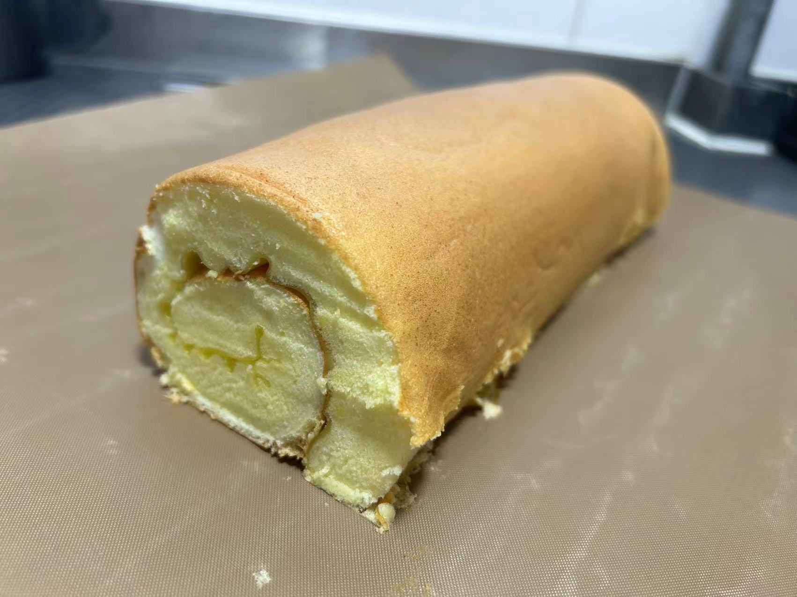

Chocolate Strawberry Cake Roll
Chocolate Strawberry Cake Roll
|
Chocolate Strawberry Cake Roll
|
 origin cakeroll |
My girlfriend loves cakes, so I tried the chocolate and original cake rolls; they were rolled with chocolate cream cheese and winter strawberries, which was sweet and sour.